A Dashboard combines widgets backed by one or more datasets. In Knowage 9.1,
Dashboard and Cockpit are separate document types with separate editors. Use
this guide for Dashboards and Create and maintain a Cockpit for Cockpits.
Open Workspace, or Documents Browser if you manage published documents.
Choose the creation action and select Dashboard.
Add a dataset that your role can use. If it has parameters, map each one to
a static value or an analytical driver as required.
Choose Add widget, select a widget type and configure its data.
Set the appearance and interactions in Settings, then apply the widget
changes. Arrange the widget on a sheet.
Save the Dashboard, completing the document details requested by the save
dialog. Reopen it to check the saved result.
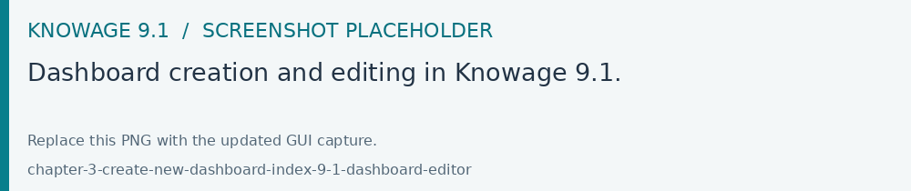
Fig. 95 Dashboard creation and editing in Knowage 9.1.
Widget editors provide Data and Settings according to their type. Use
Data to choose a dataset, select columns, define aliases, aggregations,
filters and ordering, and add calculated fields. Settings controls the
widget’s visualization, style, interactions, export and responsive options.
Image and other widgets without dataset-backed content offer different controls.
Apply changes in the editor, then save the Dashboard to retain them. Use preview
to inspect the result while editing.
Choose Add widget to open the gallery, then select the widget to create.
The editor shows the data and settings supported by that widget type. The
following sections describe the individual widgets and their options.
Below a brief description of the usefulness of some of the properties listed in the Settings section.
Configuration, to manage date format, annotations, the text message when no data is retrieved
Visualization, to pin columns, to set visibility conditions on columns, to show columns as text or icon, to show totals
Legend, to show aliases for measures
Tooltips, to apply visualization styles to the hover text
Style, to define visualization styles such as font size, font family, background
X-axis, to manage properties related to the X axis as title, position, rotation, etc
Y-axis, to manage properties related to the Y axis as title, position, rotation, etc
Colors, to manage the palette of colors
Interactions, to manage cross navigations, links, drill-downs, etc
Series, to manage format styles related to the values of the serie(s)
Responsive, to manage the visualization of your widgets on different devices such as tablets, mobiles, small and large devices
Help, to add additional explanation for a specific widget i.e. by means of an icon opening a pop up that shows some information
Important
After changing whatever property of the Settings section remember always to press Save to apply changes to the widget.
When all properties have been set up a further Save action will be necessary to permanently save the widget (dashboard) in Knowage.
By clicking the Text Widget icon you can add text to your dashboard. The widget editor opens showing the two sections
formerly introduced.
Using the Data section it is possible to associate dataset values to the text to show real time values at each execution.
You can drag a single column into the Selected Columns area or just all of them by using the arrow next to the Add Column button.
The Editor property allows typing the desired text.
From the [] placeholder menu the item Columns Data makes available the dataset column(s) previously selected as shown in the below image.
By clicking on the Image Widget icon you can add an image to the dashboard. You can both pick up a previous image from the Gallery or
upload a new one by clicking on the Upload button as show in the below image.
The chart gallery includes the following chart families:
Bar
Line
Pie
Sunburst
Wordcloud
Treemap
Parallel
Radar
Scatter
Heatmap
Chord
Gauge
Bubble
Additional chart types include:
Activity Gauge
Dumbbell
Funnel
Packed Bubble
Pictorial
Sankey
Scatter Jitter
Stream
Waterfall
Below the general steps to be followed to insert a chart.
After selecting the dataset and clicking the Add widget icon the chart gallery opens to pick up the desired chart to draw.
Once a chart has been selected The Data section opens. Here it is possible to drag and drop your column(s) into:
the Dimension(s) area, for attributes and categories;
the Values area, for measures and their aggregations.
Afterwards the setting up continues with the properties contained in the Settings section. This section could be different from
one widget to another.
The image below refers to a Funnel chart where the definition of both measure(s) and attribute(s) is needed.
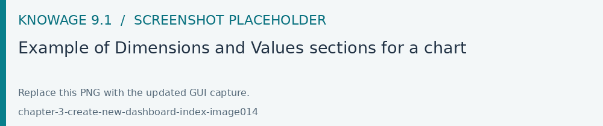
Fig. 100 Example of Dimensions and Values sections for a chart
Not all charts need both information as in case of an Activity Gauge you only need to define the measure. See image below.
One important peculiarity to highlight is the possibility to change the type of chart once a selection has already been done.
The drop down menu with your choice will still make available all the other charts as options to choose and in case the chart can be changed.
See below picture.
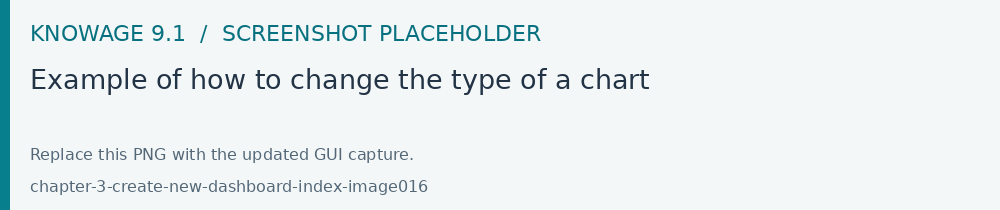
Fig. 102 Example of how to change the type of a chart
Once the chart has been inserted in the sheet of the dashboard, a three dots icon in the lower left part of the widget displays a menu with the list of all the possible actions to perform.
See below image.
Menu on a chart
The chart can be resized just dragging the little corner in the lower right part of the chart.
Another functionality really useful is the preview of the graph just using the magnifying glass
located at the upper right corner for each property of the Settings section. This means that saving the graph is not necessary to see how it
looks like as changes can be seen as they are applied.
See below image.
Preview functionality for a chart
A chart can simply be moved in a dashboard just dragging it inside the whole sheet.
This functionality is available for all widgets.
See below image.
When hoving the two vertical dotted lines a little hand appears to move the widget.
Area
An area chart is based on the line chart and displays the area between axis and lines with colors.
Commonly used to compare two or more measures. Below an example of an Area chart.
The sunburst chart is a graph with a radial layout which depicts the hierarchical structure of data displaying a set of concentric rings.
The circle in the center represents the root node, with the hierarchy moving outward from the center. The slices in the external rings represent the
children of the slice in the inner circle which means they lie within the angular sweep of the inner circle.
The area of each slice corresponds to the value of the node. Even if sunburst charts are not efficient space-wise,
they enable users to represent hierarchies in a more immediate and fascinating way.
To create a sunburst chart select at least two attributes describing the hierarchy and just one measure representing the width of the
slices. An example of dataset for the sunburst chart is shown below.
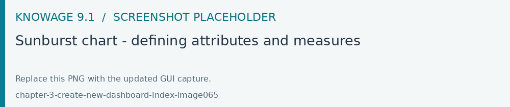
Fig. 115 Sunburst chart - defining attributes and measures
Table 7 Example of dataset for the sunburst chart.
CATEGORY
SUBCATEGORY
UNIT
Baking Goods
Cooking Oil
349
Baking Goods
Sauces
109
Baking Goods
Spices
290
Baking Goods
Sugar
205
Bathroom Products
Conditioner
64
Bathroom Products
Mouthwash
159
Bathroom Products
Shampoo
254
Bathroom Products
Toilet Brushes
92
Bathroom Products
Toothbrushes
94
The image below shows an example of a sunburst chart using the dataset previously described.
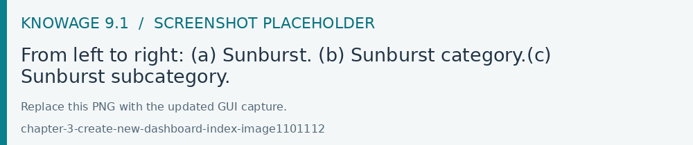
Fig. 116 From left to right: (a) Sunburst. (b) Sunburst category.(c) Sunburst subcategory.
Another example of a Sunburst chart is shown by the following image.
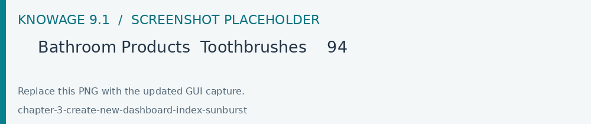
Wordcloud
The Wordcloud chart allows you to quickly see which words appear more frequently in a bunch of text.
Size and colors of the words depend on a specified weight of the measure.
To create the Workcloud chart exactly one attribute and one measure are needed.
The below example highlights what happens if two attributes are dragged and dropped in the specific area. In this case an error is shown.
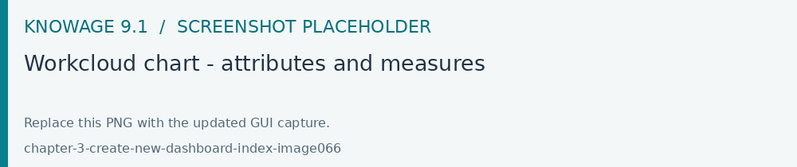
Fig. 117 Workcloud chart - attributes and measures
Chord
A Chord chart shows the relationship between two entities though your data. Data flows from one entity (start category) to a second entity (final category)
The Parallel chart is a way to visualize high-dimensional geometry and multivarious data. The axes of a multidimensional space are represented by parallel lines, usually equally spaced-out, and a point of the space is represented by a broken line with vertices on the parallel axes. The position of the vertex on an axis correspond to the coordinate of the point in that axis.
To create a parallel chart select a dataset with at least one attribute and two columns with numerical values. You can find an interesting example of dataset in the next table where we display some of its rows.
Table 8 Example of a dataset for a parallel chart.
ID
sepal_length
sepal_width
petal_length
petal_width
class
36
5.0
3.2
1.2
0.2
Iris-setosa
37
5.5
3.5
1.3
0.2
Iris-setosa
38
4.9
3.1
1.5
0.1
Iris-setosa
39
4.4
3.0
1.3
0.2
Iris-setosa
40
5.1
3.4
1.5
0.2
Iris-setosa
41
5.0
3.5
1.3
0.3
Iris-setosa
42
4.5
2.3
1.3
0.3
Iris-setosa
43
4.4
3.2
1.3
0.2
Iris-setosa
44
5.0
3.5
1.6
0.6
Iris-setosa
45
5.1
3.8
1.9
0.4
Iris-setosa
66
6.7
3.1
4.4
1.4
Iris-versicolor
67
5.6
3.0
4.5
1.5
Iris-versicolor
68
5.8
2.7
4.1
1.0
Iris-versicolor
69
6.2
2.2
4.5
1.5
Iris-versicolor
70
5.6
2.5
3.9
1.1
Iris-versicolor
71
5.9
3.2
4.8
1.8
Iris-versicolor
101
6.3
3.3
6.0
2.5
Iris-virginica
102
5.8
2.7
5.1
1.9
Iris-virginica
103
7.1
3.0
5.9
2.1
Iris-virginica
104
6.3
2.9
5.6
1.8
Iris-virginica
105
6.5
3.0
5.8
2.2
Iris-virginica
106
7.6
3.0
6.6
2.1
Iris-virginica
107
4.9
2.5
4.5
1.7
Iris-virginica
108
7.3
2.9
6.3
1.8
Iris-virginica
In this example three different classes of iris are studied. Combining the values of some sepal and petal width or lenght,
it is possible to find out which class we are looking at. One side of the below image (part a) shows a parallel chart related to the previous dataset.
The second side of the image (part b) shows thanks to selection, that all iris with petal length between 2,5 and 5.2 cm and petal width 0,9 and 1,5 cm belong to the iris-versicolor class.
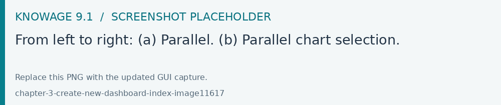
Fig. 121 From left to right: (a) Parallel. (b) Parallel chart selection.
The parallel chart needs one attribute and two measures otherwise you cannot save it. The example below shows the case.
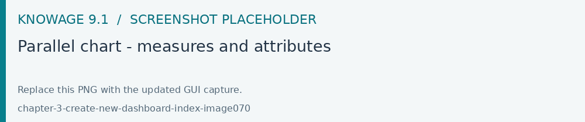
Fig. 122 Parallel chart - measures and attributes
Heatmap
A Heatmap is a two-dimensional representation of data whose values are represented by colors.
Heatmap chart uses a chromatic Cartesian coordinate system to represent a measure trend trough two categories.
A Radar chart is a two-dimensional chart showing more series of values over a varied number of variables having its own axis.
All axes are joined in the center of the graph.
To plot this graph at least one attribute and one measure are needed.
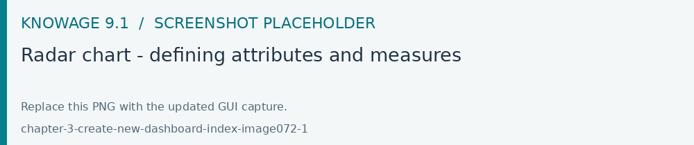
Fig. 125 Radar chart - defining attributes and measures
The Treemap is a graphical representation of hierarchical data displayed as nested rectangles.
Each branch of the tree is given by a rectangle, which is tiled with smaller rectangles representing sub-branches.
The area of the rectangles is proportional to a measure specified by a numerical attribute. The treemap is usefull to display a
large amount of hierarchical data in a small space.
By clicking the Add widget button pick up Chart and then the Treemap from the gallery.
Once a dataset has been selected at least two attributes into the X-axis panel and one measure are needed. Press Save to apply the changes.
The image below highlights the fact that one attribute is missing and the chart cannot be saved.
The order of the attributes in the X-axis panel should reflect the order of the attributes in the hierarchy starting from the root to the top.
The figure below shows an example of a Treemap chart
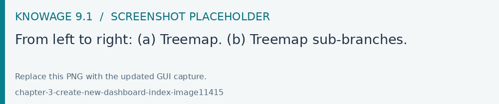
Fig. 128 From left to right: (a) Treemap. (b) Treemap sub-branches.
Bar, column, line, pie, radar and treemap charts allow the drill-down functionality.
Activity Gauge
The Activity Gauge uses circular-shaped bars to compare multiple categories against the target.
After clicking the Add widget button or icon pick up Chart and then the Activity Gauge chart from the gallery.
It is possible to change the position of the Legend just setting Left/Middle/Right. In the above picture the legend is set to appear in the middle.
Some othe properties you can manage are: Bold, Font size and family, Borders, Background.
Bubble
The Bubble chart is useful in case of three series. The size of the bubble depends on the third dimension.
After clicking the Add widget button pick up Chart and then the Bubble chart from the gallery.
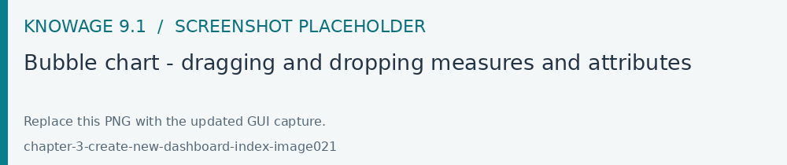
Fig. 133 Bubble chart - dragging and dropping measures and attributes
You can set some properties for the series. It is possible to define them for all series or just for one.
As shown in the below image in the last case just press the plus icon and the drop down menu will show you the list of
columns.
A Dumbbell chart uses circles and lines to show changes over time.
After pressing the Add Widget button or icon pick up Chart and then the Dumbell chart from the gallery.
To define the chart you need one attribute and two measures to define the series. See the below image.
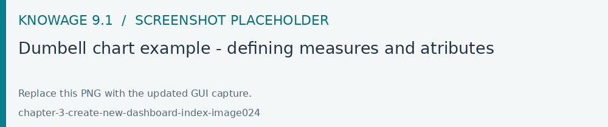
Fig. 136 Dumbell chart example - defining measures and atributes
Once inserted your attributes and measures you can manage the settings of the start of your Series as shown below.
This kind of chart provides a visual representation of how data progresses through different stages of a process starting
from a broad head and ending in a narrow neck.
By clicking the Add widget pick up Chart and then Funnel from the gallery.
Once a dataset has been selected, click the Add Widget icon of your sheet or on the equivalent icon of the menu bar.
Select Funnel as chart, choose just one measure and one attribute and then press Save to get the graph visualized.
See below image.
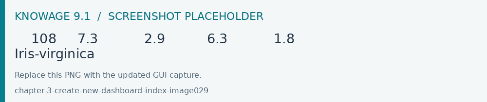
Funnel chart example
Packed Bubble
A Packed Bubble is similar to a Bubble Chart where bubbles are tightly packed rather than spread over a grid of X and Y-Axis.
Once a dataset has been selected, click the Add Widget icon of your sheet or on the equivalent icon of the menu bar.
Select Chart and then Funnel as chart, choose just one measure and two attributes. The first attribute is used for grouping and the second one for labels.
Then press Save to get the graph visualized.
See below image.
Packed bubble chart example
Pictorial
A Pictorial chart represents different stages of data using a bulb.
Once a dataset has been selected, click the Add Widget icon of your sheet or the icon of the menu bar.
Select Chart and then Pictorial as chart, choose just one measure to define the Serie and one attribute for the category.
See below image
A Sankey chart is useful to highlight the flow of data from one value to another.
By clicking on the Add widget button press Chart and then Sankey.
The gallery offers two kinds of charts: Sankey and Sankey Inverted. The last chart is just the inverted represention of the normal Sankey.
Once selected the dataset, you need to choose two attributes representing the from and the to categories of the flow and a measure.
A Scatter chart is like a cloud where two variables from a data set are plotted on a Cartesian space by using dots.
By clicking on the Add widget button press Chart and then Scatter.
After selecting the dataset to define this chart you need to pick up two numerical values representing the measures on X and Y and the category (Grouping).
See below image.
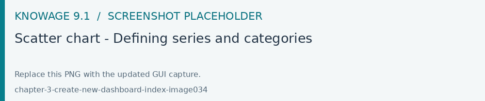
Fig. 145 Scatter chart - Defining series and categories
This chart is useful when there are so many points piled up that data reading data turns out to be very tricky thus each point will be slightly
offset horizontally to reduce overlap and to allow reading.
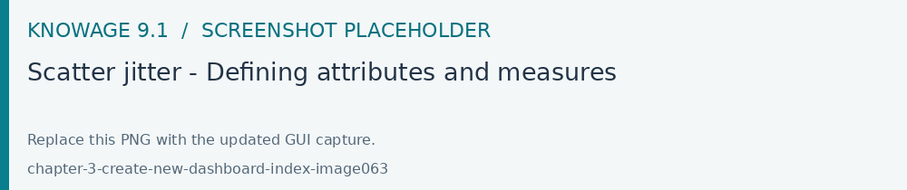
Fig. 147 Scatter jitter - Defining attributes and measures
A Streamgraph represents a variation of the area chart where areas are plotted around a central axis and not a fixed one. This shapes the
graph with no corners but with rounded edges giving the impression of a flow.
By clicking on the Add widget button press Chart and then Streamgraph. You need to choose one attribute for the X-axis, one attribute as category
and one measure as shown below.
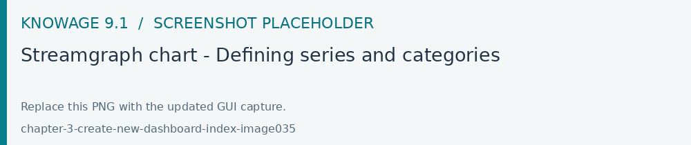
Fig. 149 Streamgraph chart - Defining series and categories
A Waterfall chart can be useful to understand how data is affected by positive or negative values. It’ s like a bar chart where in the middle of two normal bars
there are suspended bars as the beguinning of the bar is represented by the end of the previous bar.
By clicking on the Add widget button press Chart and then Waterfall.
Select yor dataset and then you will be asked to enter just one attribute as category and one measure as a serie as shown below.
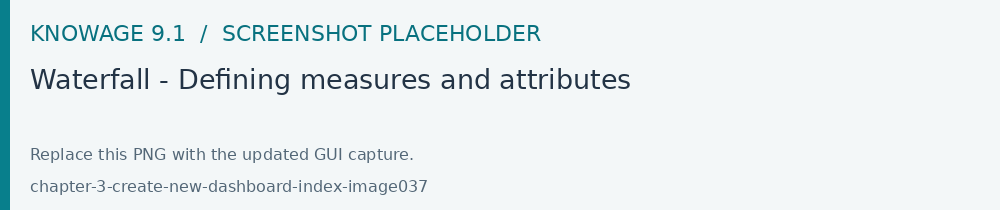
Fig. 151 Waterfall - Defining measures and attributes
After describing most of the graphs below we provide an overview of the main features available and useful when creating charts.
Ordering
The below images shows an example of how to apply ordering for a given category.
To apply a specific sorting criterion, simply click the appropriate icon, as shown in the image.
The Grouping functionality contains also the Second Category option. By enabling this option you need to select a specific series and the chart will show
the values of that series for each value of the second category along the X-axis represented by the first category.
Fig. 160 A Chart showing values based on the second category
In addition there some other functionalities:
Axis Major/Minor Grids Details
The below image shows an example of a chart with grids defined for the Y-axis. There are two grids both highligted with dashed lines.
Intervals are respectively set to 1500 (Minor Grid) and to 4000 (Major Grid).
To add some details to the values of your measures of a chart there is a specific section named Series.
Here you have the chance to set prefix/suffix i.e.
The suffix could be used to specify which currency that measure represent in case of costs or sales for example.
In case of further series the interface allows to insert a new one just pressing the plus icon.
In case new series details are inserted they will overwrite the former ones. for that serie.
All changes need always a save action to be applied to the chart.
In case you do not want to apply details anymore just disable the option.
Advanced
This section allows you to write properties from the Highcharts API.
As an example a property to write could be plotOptions.column.borderRadius.
If you want to customize the message when no data is retrieved you can do it just going to a specific section as shown below.
For example if you want the message No data to show to be displayed at the left top and want it to appear in red as color go to
Settings>Configuration>No Data.
The HTML widget allows to add customized HTML and CSS code to implement very flexible and customized dynamic elements.
This widget supports all HTML5 standard tags and CSS3 properties.
By clicking the Add widget button or icon and then HTML you can insert the HTML widget.
For security reasons no custom Javascript code can be added to html tags. Every tag considered dangerous will be deleted
after saving the document.
Important
A CSS property will be extended to all the classes in the cockpit with the same name; to apply the property
only to the current widget use the id prefix shown in the info panel of the CSS editor
The kn-column tag is the main dynamic HTML Widget tool, it allows to select a column name from the selected dataset and to display its values. The value of the kn-column attribute should be the name of the column value you want to read in execution.
The row attribute is optional and is a number type attribute. This attribute can let you retrieve a specific row according to the position in the dataset. If no row is selected the first row column value will be shown.
The aggregation attribute is optional and is a string type attribute. If inserted the value shown will be the aggregation of all column rows values. The available aggregations are: AVG, MIN, MAX, SUM, COUNT_DISTINCT, COUNT, DISTINCT COUNT.
The precision attribute is optional and is a number type attribute. If added and if the result value is a number, the decimal precision will be forced to the selected one.
kn-parameter
[kn-parameter='PARAMETER-NAME']
The kn-parameter tag is the tool to show a dataset parameter inside the widget execution. The value of the kn-parameter attribute should be the name of the parameter to display.
The kn-calc tag is the tool to calculate expressions between different values on widget execution. Everything inside the brackets will be evaluated after the other tags substitution, so will be possible to use other tags inside.
The precision attribute is optional and is a number type attribute. If added and if the result value is a number, the decimal precision will be forced to the selected one.
The kn-repeat attribute is available to every HTML5 tag, and is a tool to repeat the element for every row of the selected dataset.
This attribute is naturally linked to kn-column tag. If inside a kn-column tag without a row attribute is present, the kn-repeat will show the column value for every row of the dataset.
Inside a kn-repeat is possible to use the specific tag [kn-repeat-index], that will print the index of the repeated column row.
The limit attribute is optional and is a number type attribute. If added the number of row repeated will be limited to the selected number. If no limit is provided just the first row will be returned. If you want to get all records, you can set it to -1, but be careful because big datasets can take a while to load completely.
kn-if
<divkn-if="CODE-TO-EVALUATE">...</div>
The kn-if attribute is available to every HTML5 tag and is a way to conditionally show or hide an element based on some other value. The attribute content will be evaluated after the other tags substitution, so it will be possible to use other tags inside. If the evaluation returns true the tag will be shown, otherwise it will be deleted from the execution.
kn-cross
<divkn-cross>...</div>
The kn-cross attribute is available to every HTML5 tag and is a way to make the element interactive on click. This attribute makes the element clickable to open the cross navigation specified in the widget settings. If there is no cross navigation set this tag will not work.
kn-preview
<divkn-preview="DATASET-TO-SHOW">...</div>
The kn-preview attribute is available to every HTML5 tag and is a way to make the element interactive on click. This attribute makes the element clickable to open the dataset preview dialog. The attribute value will be the dataset label of the dataset that you want to open. If a dataset is not specified the cockpit will use the one set for the widget. If no dataset has been set and the attribute has no value this tag will not work.
The kn-selection-column attribute is available to every HTML5 tag and is a way to make the element interactive on click. This attributes makes the element clickable to set the chosen column and value as a selection filter in the cockpit. The default will use as a selection the first row value of the column.
The kn-selection-value attribute is optional and will let you specify a specific value as a column selection filter.
kn-variable
[kn-variable='VARIABLE-NAME'key='VARIABLE-KEY']
The kn-variable tag is the tool to read the runtime value of one of the defined variables. It will change depending on the current value and can be used inside kn-if and kn-calc.
The key attribute is optional and will select a specific key from the variable object if the variable is “Dataset” type, returning a specific value instead of a complete dataset.
Warning
Banned Tags
To avoid Cross-site scripting and other vulnerabilities, some tags are not allowed and will automatically be removed by the system when saving the dashboard:
<button></button>
<object></object>
<script></script>
If you need to simulate a button behaviour use a div (or another allowed tag) and replicate the css style as shown below:
Base paths to external resources (images, videos, anchors, CSS files and inline frames) must be declared within TOMCAT_HOME/resources/services-whitelist.xml XML file inside Knowage Server, otherwise these links will be removed by the system.
This whitelist file contains safe and trusted websites, to restrict end users of providing unsafe links or unwanted web material. Knowage Server administrator can create or edit it (directly on the file system) to add trusted web sites. Here below you can see an example of services-whitelist.xml file; as you can see, its structure is quite easy: baseurl attributes refer to external services, relativepath must be used for Knowage Server internal resources instead:
By clicking on the Add widget button or icon and then on Table it is possible to add a Table widget to the dashboard.
After selecting the dataset, drag and drop the columns to show.
You can active Pagination just switching on the sliding button and then specify the number of items to be visualized per page.
To handle each column settings just click on the setting icon before the trash. You will be able to set aliases, the aggregation function
and filters on that column.
To manage styles and other functionalities for columns just move to the Settings section.
The below image shows how to pin colums in a table. Pinned columns are columns that are fixed to the left or to the right of the table.
The plus icon will add a new line where the column to be pinned has to be picked up from the Columns drop down menu. The field Pinned has toset to Left or Right.
The below image shows how to apply Conditional Styles to a specific column of the table.
If a given condition for a measure occurs it is possible to set properties as font size, font Family, background, etc.
In case variables and parameters have been defined for the dashboard just make your choice from the Value Type menu to enter the related value.
By clicking the Add widget button or icon and then Pivot it is possible to add a Pivot widget to the dashboard.
With this widget the user can decide wich field of a dataset could be represented as a column and wich one as a row.
The below image shows an example of a Pivot widget. Changes to the layout can be made by handling the Style properties defined
in the Settings section of the widget.
After selecting the dataset, you can drag and drop fields to define columns, rows and measures of the pivot table.
Pivot widget - defining colums, rows and measures
By clicking on the icon highlighted in the below image a Field chooser appears.
Here you can handle some properties as ordering just by clicking the arrow appearing on the right side of each field or you can simply exchange the attributes
previosly selected to show in your pivot table.
Pivot widget - Field chooser
Filters on values can be applied just by clicking the funnel icon.
Pivot widget - applying filters
By default all fields are visualized as text. In case you need a specific measure to be represented i.e. as an icon you just need
to click the plus icon, select a measure column from the drop down menu and the visualization type.
Pivot widget - displaying measures as text or icon
Conditional styles can also be applied to a measure so that when resulting i.e. greater that a specific value the color can be a different one.
For all those columns to be represented as an icon, it is important to handle this property to specify the range of values for which the measure will appear as an icon.
Outside the specified range(s) the measure will appear as text.
By clicking the Add widget button or icon and then Map it is possible to add a Map widget to the dashboard.
The Map Widget is useful when a user needs to visualize data related to a geographic position. The widget supports multiple layers, one for every dataset added to widget and one data field for every layer.
Unlike the most of the widgets that have a Data section for data configuration here we find the Layer section where the user can add and remove layers,
set the format of a spatial attribute to use and specify the attributes to display on the map and on the detail popup.
The below image shows the Layers section of a map widget to handle the Layers/Datasets to be used for the geographical information and data visualization of the map.
Fig. 185 Map widget - Layers section of a map widget.
The clicking of the Add Layer button allows the visualization of all the available datasets/layers.
The wizard allows the visualization of all of them or just one type by clicking the specific button.
Fig. 186 Map widget - Choosing a dataset for a layer.
In the Layer Metadata section, the user can set the spatial attribute of the dataset that will be used to display markers on the map.
Currently, the following spatial attribute types are supported:
String format: where the value specify two decimal numbers representing latitude and longitude separated by a space;
JSON: where the value is a text string in GeoJSON format;
WKT: where the value is a text string in Well-known Text format;
Geographic coordinates format
For every type defined above the user has to specify the format of the geographic coordinate that is wether latitude comes first or vice versa.
Below another example of a map using a choroplet visualization and created by using two layers, a topojson file and a dataset.
Bear in mind the the Data Connection section allows also the retrieving of a measure by using the same layer.
Fig. 194 Layers of a map with a dataset and topojson file
The topojson file was previously created under the CATALOGS>Layers menu item and will be added as a layer to the map widget.
Furtherly the figure below shows also the definition of the Data Connection as Join.
This is because a combination between a dataset and a topojoson file has been used as both of them have in common the column ID_1.
The goal is to show the measure POPULATION for each region when hovered over with the mouse.
To do this, you will need to enable a Tooltip by choosing the layer and property to display.
By clicking the Add widget button or icon and then Active Selections it is possible to add a Active Selections widget to the dashboard.
This chart shows the list of current selections applied on a widget. An icon on the right upper corner of the dashboard will
be visible and clickable to open the list. On each item of the list a trash icon is available for the deletion of that selection.
To get the result shown in the above image just go to the Settings and select the Style property
Fig. 200 Active selections widget - Style property
Be aware that a selection can be locked. In this case it will be not possible to delete that selection until unlocked. This can only be done by admin users.
This forces the final user to run the dashboard with that selection that will not be removed as locked by the admin user.
By clicking on the Add widget button or icon and then Selector it is possible to add a Selector widget to the dashboard.
The Selector widget allows a dataset filtering by means of a combobox, radio button or checkboxes.
After choosing the column to use as a filter just move to the Setting section and then Configuration. See below image.
By clicking the Add widget button or icon and then Custom Chart it is possible to add a Custom Chart widget to the dashboard.
The Custom Chart allows the user to directly embed HTML, CSS and JS code using a supported external chart library and integrating with Knowage data and interactions using custom API.
Important
Chart libraries
Former versions of Knowage EE supported the inclusion of other libraries adding the CDN script tag in the html Editor by means of the
kn-import tag:
1<kn-importsrc="yourCDNurl"></kn-import>
Now you can insert the library link from the Libraries section of the Editor panel as shown below.
The CSS component allows to type in CSS classes that will be used by the HTML code of the widget. It’s also possible to use @import command if the referred url is inside the whitelist.
The HTML component allows to insert HTML tags in order to create a structure to host the custom chart and additional structural informations.
The JavaScript component is the code section, and allows to insert the custom chart code, custom Javascript code and the API usage.
The keyword datastore allows using APIs. Datastore is an object that contains the curren data;
Through a variety of methods it is possible to iterate over the results and get all values. See below:
sort - angular sort service (sorting is executed on the client side)
returns: datastore sorted by dataset’s column/s
params: dataset’s column name
optional: sort type object {column:’asc/desc’}
example1:
1datastore.sort('STORE_ID')//by default, it is asc2OR:3datastore.sort({'STORE_ID':'asc'})
filter - angular filter service (filtering is executed on the client side)
returns: datastore filtered by some value for dataset’s column/s
params: object that contains dataset’s columns names for properties -> value to be filtered, an optional boolean to enable the strict comparison (false as default)
returns: hierarchy object with its functions and tree
params: object that contains property levels -> array of dataset’s columns names
optional: same object with optional property measures -> object that contains dataset’s columns names for properites -> aggregation function (sum, min, max)
returns: an array with all the selections done; each selection has informations about the dataset where the selection has been done, the column e the value passed through the selection
Interaction with the other widgets is also possible just by using the clickManager:
1datastore.clickManager(columnName,columnValue);
This method can be added everywhere the code manages a click event and will notify Knowage about the interaction.
The default case (if no cross-navigation or preview-navigation is set) will throw a selection filter with the dataset column name and column value set in the method.
Any enabling of cross-navigations or previews will have priority on the selection and will trigger the specified interaction. The dynamic values used will be the ones set in the method arguments.
Warning
Whitelist
For security reasons no dangerous Javascript code can be added to html tags. Every tag considered dangerous will be deleted on save by the system.
Base paths to external resources (images, videos, anchors, CSS files and inline frames) must be declared within TOMCAT_HOME/resources/services-whitelist.xml XML file inside Knowage Server, otherwise those external links will be removed by the system. This whitelist file contains safe and trusted websites, to restrict end users of providing unsafe links or unwanted web material. Knowage Server administrator can create or edit it (directly on the file system) to add trusted web sites. Here below you can see an example of services-whitelist.xml file; as you can see, its structure is quite easy: baseurl attributes refer to external services, relativepath must be used for Knowage Server internal resources instead:
By clicking on the Add widget button or icon and then Discovery it is possible to add a Discovery widget to the dashboard.
The Discovery widget is used to easily use and navigate into a SOLR dataset by using facets aggregation and by showing the results in a tabular representation .
It is possible to choose the fields that should be shown as the result.
The result to be visualized can also be configured to show a limited set of fields and facets. Facets are shown on the left side of the table and data
can be filtered just clicking on a specific value inside one of them.
The search bar can also be set up from the configuration settings.
The below image shows an example of dicovery widget.
Facets properties can be handled by enabling the related option i.e. selecting which faces to visualize.
See below images.
To throw the filtering on the table the property Enable Selection has to be enabled.
Other properties to handle are:
Closed by default, if enabled the facets will be visible as closed groups by default.
Facets column width, this setting allows to choose the dimension of the facets column in px, rem or percentage values.
Facets max number, this setting allows to choose the maximum number of facets visible for every field.
The below image shows how to enable the search bar by specifing on which fields to run the search and whether it is a static search or just run through an analytical driver.
By clicking the Add widget button or icon and then on Python it is possible to add a Python widget to the dashboard.
The editor widget allows embedding a Python script. Before writing the code it is necessary to specify
The below image shows an example of a Python script.
Python script example
Dataset columns and/or parameters can also be added to the script as shown below.
Adding parameters or columns to a Python script
Inside the Python scripts analytical drivers can be also accessed by using the usual placeholder syntax $P{}.
Additionaly more environments where to run scripts can be created. The below image shows how to handle all the evironments previously defined.
To support this kind of choice a list of available libraries is displayed for each selected environment.
To add a dataset to the dashboard there are two options. You can click the two icons highlighted in the below image.
Adding a dataset
By clicking on them you need to click the Add Datset button to display the list of all datasets available.
Selecting a dataset from a list
The below image shows the dataset that have been selected for the new dashboard.
List of dataset for a dashboard
As you can see, the above list contains a dataset with parameters. In case you need to set up the value of the parameterjust click
the name of the dataset and select the type of parameter.
Dataset with parameter
For static parameters just put the value otherwise specify the name of the parameter that will contain the value.
The cross navigation allows navigation from one document to another.
You will find the cross navigation functionality in the Settings section of a widget. Just click on Interactions as shown below.
Drill down leads the user from a more general view of the data to a more specific view just by clicking the mouse.
This functionality is also listed under the Interactions property of the Settings section.
The following example shows how drill-down works.
The selected categories are four and called: product_family, product_department, product_category and product_subcategory.
Once we open the document, we get as shown below:
And so on to the fourth subcategory. Selecting the “Back to: …” icon available at the right corner of the graphic, the user can get back to
the previous level. This efficient feature allows a deep insight of the analysis that leads to important conclusions.
The below image shows where to enable the drill-down functionality.
To manage the cache and frequency of your data you need to select the dataset form the list of the available ones
and switching on the sliding button for the Cache option as shown in the below image.
Steps to add a calculated field:
- select a dataset
- click on the Add Columns button as shown in the below image.
- follow the instructions appearing in the pop up (assign a name, a function,..)
- close the pop-up by clicking Apply. The button remains graid off until validation is done.
Once the new field has been added you will see the new column appearing toghether with the ones of your dataset.
By using the icon highlighted in the below image you can reopen the details pop-up.
The below two images shows how to enable the filtering functionality on a specific field of a dataset.
From the Data section you need to click the gear icon and switch on the Enable filter.
From the same editor it is also possible to set the ordering on a field as shown below.
Ordering on a field
Ordering is available both on categories and values and are mutually exclusive as it is only possible to arrange an order
eather for one or for the other. The order criterion established on a given category will be automatically disabled when clicking the arrow icon of a value.
The below image shows the associaton created between the fields of the two datasets. You need to save.
It is possible to delete the association just clicking on the trash icon appearing on the right side of the association name.
In case of more sheets inside a dashboard there may be a need to have the same header for all sheets.
By enabling the header it can be made available for all sheets just in one shot.
To create a custom header click the three dots item of the menu bar and select Custom Header as shown below.
The dashboard engine allows to manage contents in multiple sheets.
Each sheet can contain different analysis with different datasets.
Just click on the Plus icon and rename the new sheet.
To move the widget from ine sheet to another just open the three dots menu in the left bottom side, select Move Widget and specify the name of the Sheet.
The below image shows how to export the contents of a dashboard by using the Export functionality available in the menu.
From the three dots, select Export and then one of the three options: PDF, XLSX, PNG.
This functionality allows your new dashboard to be adapted to the various i.e. small or large devices.
The below image shows the set of options that can be enabled.
As a first option there is one in case of only one widget in a dashboard.
Treat migration as creating a Dashboard replacement for an existing Cockpit.
Keep the original document and its template available for comparison.
Back up the Cockpit template and record its datasets, parameters,
associations, variables and interactions.
Create a Dashboard document and add the required datasets.
Recreate its widgets in the Dashboard editor, using the Cockpit settings as
the reference. Rebuild maps with the Map wizard and crosstabs with Pivot.
Configure parameter mappings, associations, variables and cross-navigation,
then save the Dashboard.
Compare the results under representative roles. Check filters, saved views,
layout and exports before publishing the replacement.
Dashboard and Cockpit templates have different structures. Validate any
converted template in the Dashboard editor before using it as the published
replacement.
Fig. 236 Creating a Dashboard replacement for an existing Cockpit.
In the widget’s Settings > Style > Title, enable the title and enter
its text. Use the dynamic value action to insert an analytical driver or a
Dashboard variable. The placeholders are $P{driver} and $V{variable}.
For example, Salesfor$P{year}-$V{region} displays the current values.
Check the title after changing the corresponding input and save the Dashboard.
Fig. 237 A widget title containing a driver and a variable.
Authorized editors can choose Lock all widgets or Unlock all widgets
from the Dashboard toolbar menu. This controls moving and resizing widgets;
selection locks control data filters separately.
In a Table widget’s Data section, choose Add Dynamic Columns.
Select the dataset supplying the list of columns to display.
Map its column-name field to the technical names in the widget’s main
dataset. Match the names exactly, including case.
Optionally map an order field to control display order. Otherwise the source
row order is used.
Confirm, inspect the resulting columns and save the widget and Dashboard.
For example, a source dataset returning JAN_SALES and FEB_SALES can
choose these fields from a main dataset containing twelve monthly sales columns.
Unmatched names are ignored; existing columns are skipped rather than duplicated.
In Settings > Visualization, column visibility conditions can use a
Dashboard variable. Select the target columns, variable, comparison and value;
check both the displayed columns and summary settings. Table search can use
column aliases, so readers can search the labels shown in the table.
Fig. 238 Mapping a column source and configuring variable-driven visibility.
Choose row fields, column fields, measures and their aggregations in the Pivot
editor. Configure summaries and totals for the intended layout. Where the
selected Pivot editor offers measure-as-attribute behavior, use it to place
measures as categories. Check the result with several measures and the required
summary settings before saving.
Create a Map widget, add its data and open the layer visualization wizard.
Choose a visualization type first, then configure its data connection. Bind
coordinates or the geographic join fields to the matching dataset columns.
Configure the relevant polygon or marker styles, colors, filters, aliases,
legend and tooltip precision. Preview the map with several values, apply the
configuration and save the Dashboard.
The Map widget is distinct from a standalone GIS document. A migrated Cockpit
map must be rebuilt in the Dashboard Map editor.
Fig. 239 Map wizard: visualization type and data connection.
Add an Active selections widget and choose whether it should display all
Dashboard selections or selections for a specific dataset. Use this to place
filter summaries next to the widgets they describe. Test selections across
associated datasets and retain the intended locked filters.
In Dashboard general settings, open the menu and widget options and enter the
Dashboard export file name. It accepts driver and variable placeholders;
for example, Sales_$P{year}_$V{region}.
In a widget’s export configuration, enable Excel export and set the XLSX
sheet name when needed. Check the generated workbook after changing titles
and variables. Chart spreadsheet exports support drill-down data; PDF table
settings include portrait, landscape and custom dimensions. Export commands and
formats depend on the widget type, edition and installed export services.
Fig. 240 Dashboard export filename and widget worksheet settings.